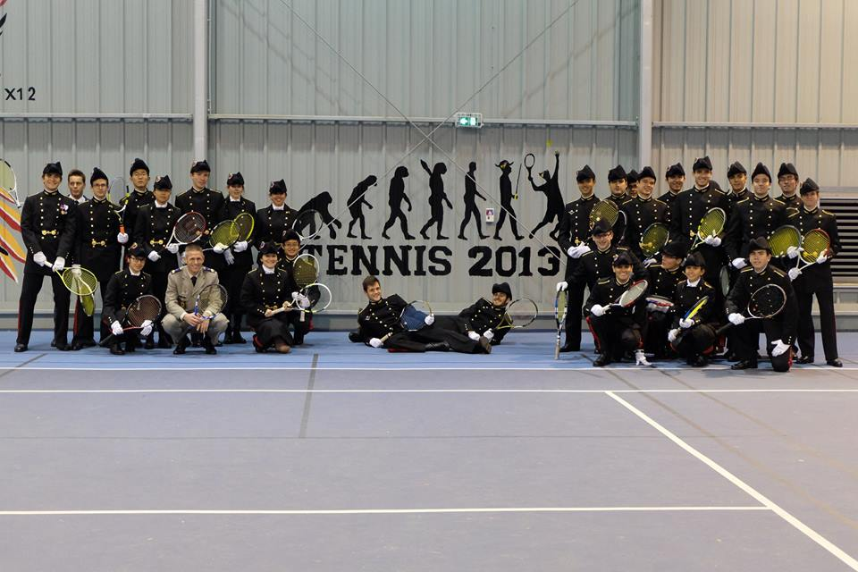
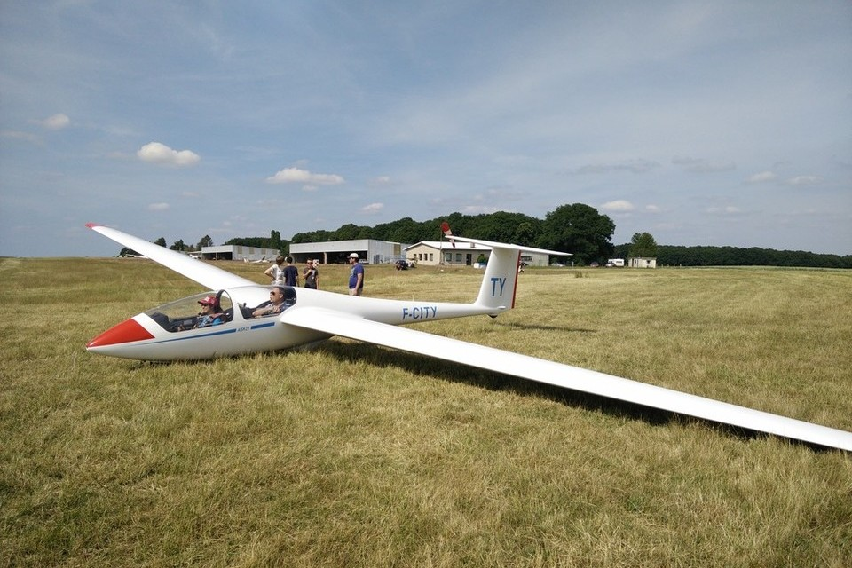
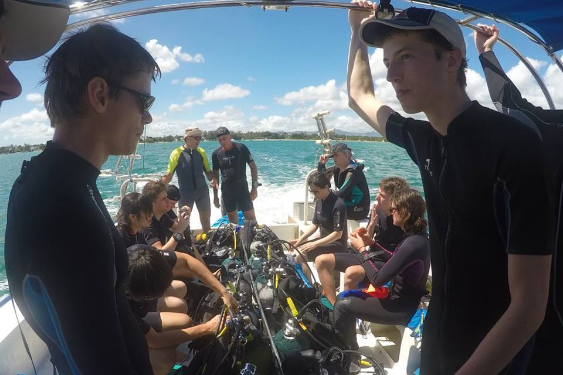
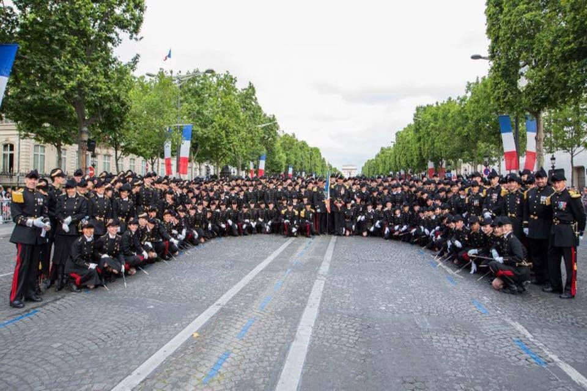

I am a Ph.D. candidate in the Oxford Robotics Institute (ORI), working on robotics and machine learning with
Ioannis Havoutis and Ingmar Posner.
My current research interests span the theory and application of meta-learning, robotic control and perception.
I am also a member of the Centre for Doctoral Training in
Autonomous Intelligent Machines & Systems
and a Clarendon Scholar.
Originally from Taiwan, I made my first courageous step at the age of seventeen to study maths and physics in France,
against my parents’ will. It is my deep belief that mathematics is the secret to understanding the world.
I dream of becoming a mathematician, a scientist, a pilot, and an astronaut.
When I am messing around with robots, I am practising judo, flying gliders, working on gliding-related stuffs,
or promoting gender equality in science and technology.

I co-founded the mathematics society "X-Poincaré" at École Polytechnique. We organised a series of fun competitions, consisting of solving maths riddles while jogging. Our goal is to share our excitement in math with others!
At Oxford, I served as a mentoring co-ordinator in OxFEST (Oxford Females in Engineering, Science and Technology), which means I helped run the mentoring scheme.
We provided our members the support of a more experienced individual. I was also the researcher representative of OxWoCS (Oxford Women in Computer Science), where my role was to organise socials for female researchers so we get to know each other better.
I am a licensed glider pilot ( social media) and I served as the captain and am currently the IT officer of Oxford University Gliding Club. We fly at Bicester Gliding Centre,
where I also volunteer as a ground crew member once every four weeks. You will most likely find me launching gliders, driving buggies and introducing new members to gliding!
I am also an CMAS 2-star scuba-diver (equivalent to PADI rescue diver), certified after one and a half year of rigourous theoretical and practical training, allowing me to dive up to 20 metres without the supervision of an instructor.
